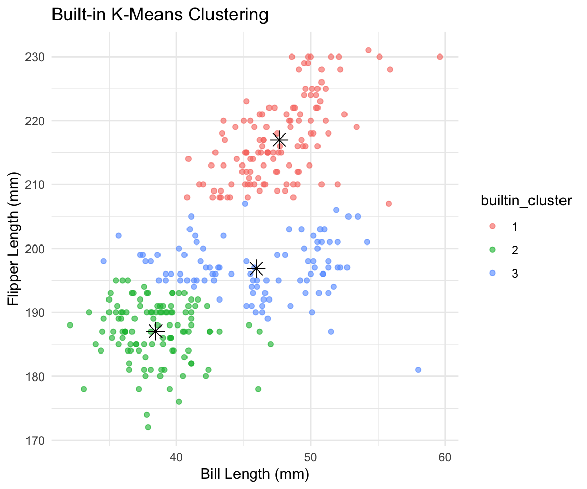
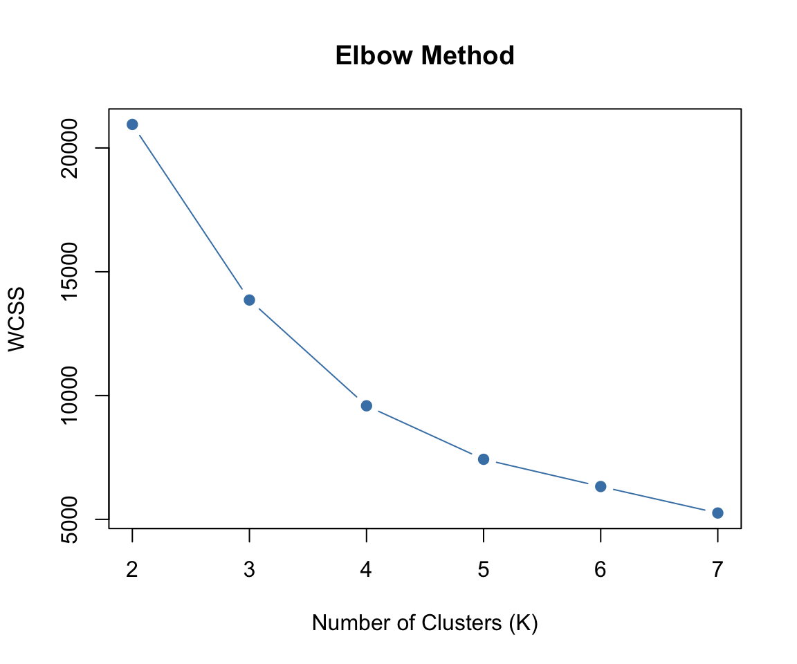
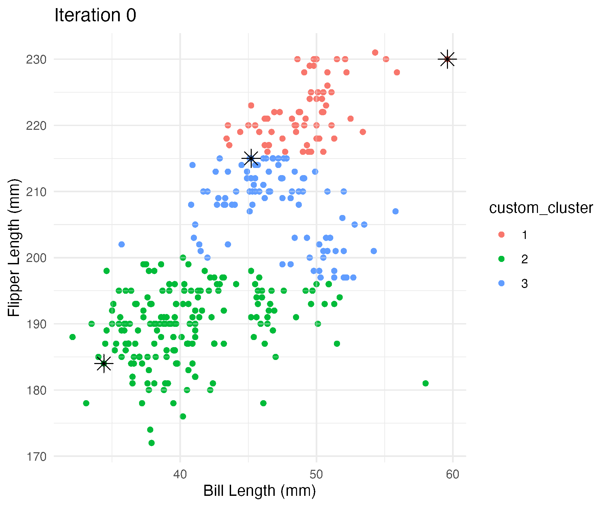
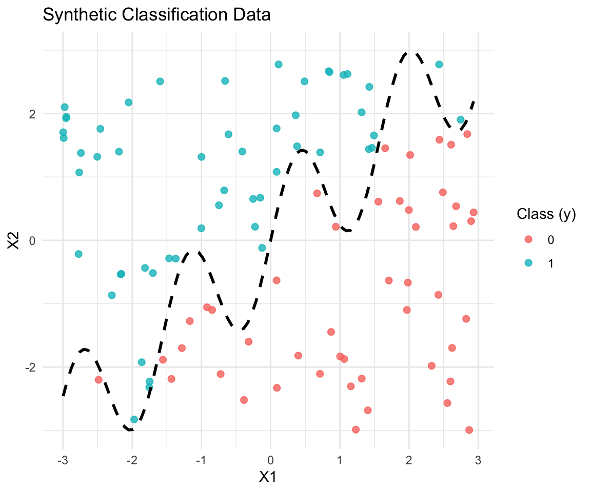
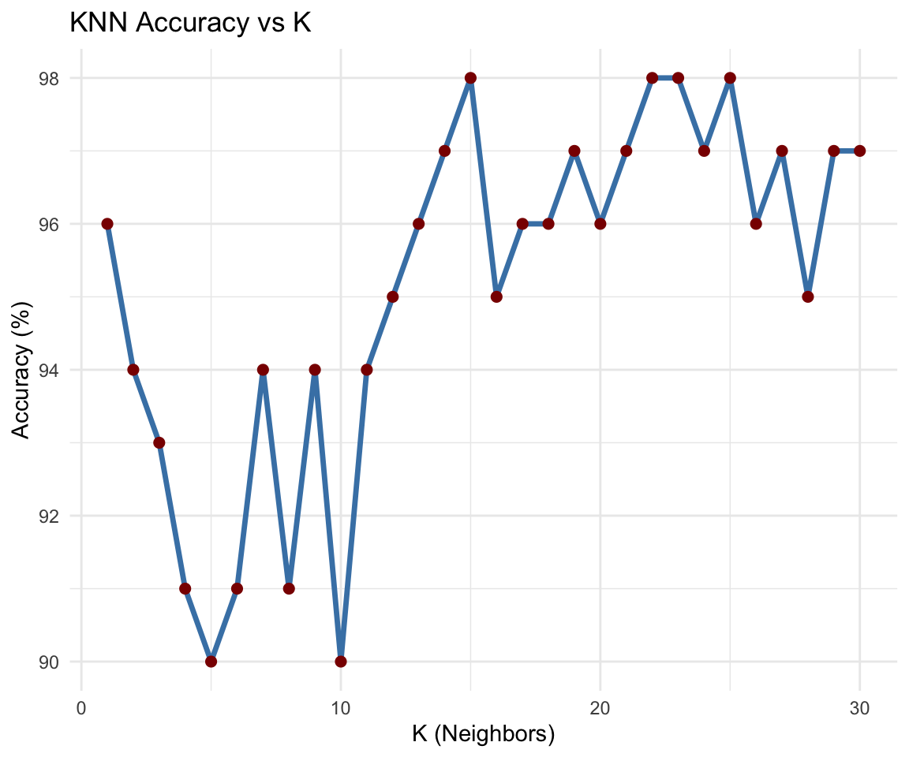

Code
library(readr)
# load datasets
yogurt <- read_csv("yogurt_data.csv", show_col_types = FALSE)
penguins <- read_csv("palmer_penguins.csv", show_col_types = FALSE)
keydrivers <- read_csv("data_for_drivers_analysis.csv", show_col_types = FALSE)library(readr)
# load datasets
yogurt <- read_csv("yogurt_data.csv", show_col_types = FALSE)
penguins <- read_csv("palmer_penguins.csv", show_col_types = FALSE)
keydrivers <- read_csv("data_for_drivers_analysis.csv", show_col_types = FALSE)A custom K-means algorithm was implemented and applied to the Palmer Penguins dataset using bill_length_mm and flipper_length_mm as input features. The custom results are visualized step-by-step and later compared to R’s built-in kmeans() function.
# load libraries
library(tidyverse)
library(patchwork)
# load and clean penguin data
penguins <- read_csv("palmer_penguins.csv", show_col_types = FALSE)
penguins_clean <- penguins %>%
select(bill_length_mm, flipper_length_mm) %>%
filter(!is.na(bill_length_mm) & !is.na(flipper_length_mm))
# define custom kmeans
kmeans_custom <- function(data, k, max_iter = 10) {
set.seed(123)
data <- as.matrix(data)
n <- nrow(data)
# init centroids
centroids <- data[sample(1:n, k), ]
clusters <- rep(0, n)
history <- list(centroids)
for (iter in 1:max_iter) {
# assign clusters
distances <- as.matrix(dist(rbind(centroids, data)))[1:k, (k+1):(k+n)]
clusters <- apply(distances, 2, which.min)
# update centroids
new_centroids <- matrix(NA, nrow = k, ncol = ncol(data))
for (i in 1:k) {
group <- data[clusters == i, , drop = FALSE]
if (nrow(group) > 0) {
new_centroids[i, ] <- colMeans(group)
} else {
new_centroids[i, ] <- centroids[i, ]
}
}
history[[iter + 1]] <- new_centroids
if (all(new_centroids == centroids)) break
centroids <- new_centroids
}
list(clusters = clusters, centroids = centroids, history = history)
}
# run custom kmeans
set.seed(42)
data_matrix <- penguins_clean[, c("bill_length_mm", "flipper_length_mm")]
result <- kmeans_custom(data_matrix, k = 3)
penguins_clean$custom_cluster <- as.factor(result$clusters)These plots show how the clusters and centroids evolve during each step of the custom K-means algorithm. At iteration 0, the centroids are randomly placed and don’t reflect the actual structure of the data. As the algorithm runs, the centroids begin to move toward the center of the groups, and the cluster assignments become more meaningful. By iteration 5 or 6, the centroids have mostly stabilized, and the cluster boundaries are clear. The algorithm continues to refine the assignments slightly, but there’s very little change after iteration 7. This suggests that the model has converged and the final clusters are consistent and well-separated based on bill length and flipper length.
To confirm that the custom implementation works as expected, the same clustering task was repeated using R’s built-in kmeans() function. The plot below shows the result with k = 3. The clusters are clearly separated, and the centroids (shown as black asterisks) are in nearly the same positions as the custom version. This provides a good check that the custom algorithm is producing valid and consistent results.
# run built-in kmeans
k_builtin <- kmeans(data_matrix, centers = 3)
penguins_clean$builtin_cluster <- as.factor(k_builtin$cluster)
# extract and rename centers
centers_builtin <- as.data.frame(k_builtin$centers)
names(centers_builtin) <- c("bill_length_mm", "flipper_length_mm")
# plot built-in result
ggplot(penguins_clean, aes(bill_length_mm, flipper_length_mm)) +
geom_point(aes(color = builtin_cluster), alpha = 0.6) +
geom_point(data = centers_builtin,
aes(bill_length_mm, flipper_length_mm),
color = "black", shape = 8, size = 4) +
labs(title = "Built-in K-Means Clustering",
x = "Bill Length (mm)",
y = "Flipper Length (mm)") +
theme_minimal()
The built-in kmeans() function grouped the penguins into three clusters that align closely with the structure seen in the custom K-means results. The centroids are placed in the same general locations, and the clusters themselves are well-formed and mostly non-overlapping. This confirms that the built-in algorithm arrived at a similar solution, and reinforces that the data naturally separates into three distinct groups based on bill length and flipper length. These groups likely correspond to meaningful biological differences, such as different penguin species.
After confirming that the clustering works, the next step is to figure out how many clusters actually make sense for this dataset. To do that, two common methods were used: the elbow method, which looks at how the within-cluster sum of squares (WCSS) changes with different values of k, and the silhouette method, which measures how well-defined the clusters are.
library(cluster)
# extract numeric matrix
data_matrix <- penguins_clean[, c("bill_length_mm", "flipper_length_mm")]
# init vectors
wcss_values <- numeric()
silhouette_values <- numeric()
# loop over k
for (k in 2:7) {
km <- kmeans(data_matrix, centers = k, nstart = 20)
wcss_values[k] <- km$tot.withinss
sil <- silhouette(km$cluster, dist(data_matrix))
silhouette_values[k] <- mean(sil[, 3])
}
# plot elbow method
plot(2:7, wcss_values[2:7], type = "b", pch = 19,
col = "steelblue", xlab = "Number of Clusters (K)",
ylab = "WCSS", main = "Elbow Method")
# plot silhouette method
plot(2:7, silhouette_values[2:7], type = "b", pch = 19,
col = "darkgreen", xlab = "Number of Clusters (K)",
ylab = "Silhouette Score", main = "Silhouette Method")
Both the elbow method and the silhouette method suggest that the best number of clusters is 3. In the elbow plot, the WCSS drops off quickly up to k = 3 and then starts to flatten out, which is a good sign that adding more clusters doesn’t help much. The silhouette scores also seem to peak around k = 3, which means the clusters are more clearly defined at that point. So based on both of these metrics, 3 clusters looks like the right choice for this data.
# install magick once (do not run in .qmd)
# install.packages("magick")
# load libraries
library(magick)
# create frames directory
dir.create("frames", showWarnings = FALSE)
# save plots per iteration
for (step in seq_along(result$history)) {
centroid_step <- as.data.frame(result$history[[step]])
names(centroid_step) <- c("bill_length_mm", "flipper_length_mm")
step_title <- paste("Iteration", step - 1)
step_plot <- ggplot(penguins_clean, aes(bill_length_mm, flipper_length_mm)) +
geom_point(aes(color = custom_cluster), alpha = 0.6) +
geom_point(data = centroid_step,
aes(bill_length_mm, flipper_length_mm),
color = "black", shape = 8, size = 4) +
labs(
title = step_title,
x = "Bill Length (mm)",
y = "Flipper Length (mm)"
) +
theme_minimal()
ggsave(sprintf("frames/frame_%02d.png", step), plot = step_plot, width = 6, height = 5)
}
# read saved frames and create gif
frame_paths <- list.files("frames", full.names = TRUE)
frame_images <- lapply(frame_paths, image_read)
animated_gif <- image_animate(image_join(frame_images), fps = 1)
image_write(animated_gif, "kmeans_animation.gif")To visualize how the custom K-means algorithm converges over time, each step of the clustering process was saved and animated. The animation shows how the centroids move during each iteration as the algorithm works toward a stable clustering of the penguins. By the final frames, the clusters are well-formed and the centroids have settled into consistent positions, matching the result suggested by the elbow and silhouette methods.

These plots show how the clusters evolve during each iteration of the custom K-means algorithm. At first, the centroids are randomly placed and the clusters don’t line up with the structure in the data. But as the algorithm runs, the centroids quickly move into more meaningful positions. By around iteration 6 or 7, the centroids have mostly stabilized and the clusters are clearly defined, suggesting that the algorithm has converged.
In this section, I implement the K-nearest neighbors (KNN) algorithm from scratch and evaluate it on a synthetic classification dataset. I also compare the results to R’s built-in class::knn() function.
# generate synthetic data
set.seed(42)
n <- 100
x1 <- runif(n, -3, 3)
x2 <- runif(n, -3, 3)
x <- cbind(x1, x2)
# define wiggly boundary
boundary <- sin(4 * x1) + x1
# assign binary outcome
y <- ifelse(x2 > boundary, 1, 0) |> as.factor()
# combine into dataframe
dat <- data.frame(x1 = x1, x2 = x2, y = y)This plot shows the synthetic classification dataset with two features, x1 and x2, and a binary outcome y. Each point is colored by its class label, with the black dashed line showing the decision boundary defined by sin(4 * x1) + x1. Points above the curve are labeled as class 1, and points below are labeled as class 0. The boundary is non-linear and wavy, which makes the classification task more complex, a good setup for testing how well KNN can adapt to non-linear patterns in the data.
# plot data with boundary
# install.packages("ggplot2")
library(ggplot2)
ggplot(dat, aes(x = x1, y = x2, color = y)) +
geom_point(size = 2, alpha = 0.8) +
# add decision boundary
stat_function(fun = function(x) sin(4 * x) + x,
color = "black", linetype = "dashed", linewidth = 1) +
labs(
title = "Synthetic Classification Data",
x = "X1",
y = "X2",
color = "Class (y)"
) +
theme_minimal()
To find the best number of neighbors for the KNN classifier, the model was evaluated across a range of ( k ) values from 1 to 30. For each value of ( k ), the classification accuracy was calculated using the test dataset. The plot below shows how accuracy changes with different ( k ) values, which helps identify where the model performs best.
# load libraries
library(class)
library(ggplot2)
# generate test data
set.seed(123) # new seed
n_test <- 100
x1_test <- runif(n_test, -3, 3)
x2_test <- runif(n_test, -3, 3)
# define boundary
boundary_test <- sin(4 * x1_test) + x1_test
# assign binary labels
y_test <- ifelse(x2_test > boundary_test, 1, 0) |> as.factor()
# combine into test dataframe
test_dat <- data.frame(x1 = x1_test, x2 = x2_test, y = y_test)
# generate training data
set.seed(42)
n <- 100
x1 <- runif(n, -3, 3)
x2 <- runif(n, -3, 3)
boundary <- sin(4 * x1) + x1
y <- ifelse(x2 > boundary, 1, 0) |> as.factor()
dat <- data.frame(x1 = x1, x2 = x2, y = y)
# generate test data
set.seed(123)
n_test <- 100
x1_test <- runif(n_test, -3, 3)
x2_test <- runif(n_test, -3, 3)
boundary_test <- sin(4 * x1_test) + x1_test
y_test <- ifelse(x2_test > boundary_test, 1, 0) |> as.factor()
test_dat <- data.frame(x1 = x1_test, x2 = x2_test, y = y_test)
# prep inputs
train_x <- dat[, c("x1", "x2")]
train_y <- dat$y
test_x <- test_dat[, c("x1", "x2")]
test_y <- test_dat$y
# define custom knn
knn_custom <- function(train_x, train_y, test_x, k = 3) {
train_x <- as.matrix(train_x)
test_x <- as.matrix(test_x)
n_test <- nrow(test_x)
preds <- character(n_test)
for (i in 1:n_test) {
dists <- sqrt(rowSums((train_x - matrix(test_x[i, ], nrow = nrow(train_x), ncol = 2, byrow = TRUE))^2))
nn_idx <- order(dists)[1:k]
nn_labels <- as.character(train_y[nn_idx])
preds[i] <- names(which.max(table(nn_labels)))
}
return(as.factor(preds))
}
# evaluate accuracy over k
accuracy_vec <- numeric(30)
for (k in 1:30) {
preds_k <- as.character(knn_custom(train_x, train_y, test_x, k))
accuracy_vec[k] <- mean(preds_k == as.character(test_y)) * 100
}
# plot accuracy
ggplot(data.frame(k = 1:30, accuracy = accuracy_vec), aes(x = k, y = accuracy)) +
geom_line(color = "steelblue", linewidth = 1.2) +
geom_point(color = "darkred", size = 2) +
labs(
title = "KNN Accuracy vs K",
x = "K (Neighbors)",
y = "Accuracy (%)"
) +
theme_minimal()
The plot shows accuracy starts off a little unstable for smaller k values, dipping as low as 90%, but then improves steadily. The highest accuracy reaches 98% at several values, including around k = 18 and k = 23. After that point, the accuracy levels out and remains high, suggesting that the model is stable with larger k values. Overall, this suggests that k = 18–23 is a good range to use, with strong and consistent performance.